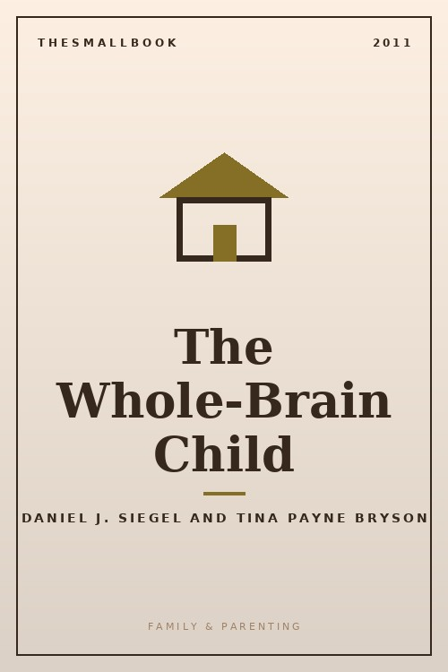

Library › Family & Parenting
The Whole-Brain Child - Summary & Key Lessons

Twelve strategies to nurture your child's developing mind.
📖 OPEN THE FULL INTERACTIVE BREAKDOWN →🌐 Read it in Hindi, Hinglish, Gujarati, Tamil & 22 more languages, with audio.
💡 The Big Idea
Daniel J. Siegel and Bryson explain the child's brain as a house: a downstairs of emotion and instinct, fully built, and an upstairs of judgement, empathy and calm, scaffolding until the mid twenties. Their twelve strategies help parents integrate the floors: connect before redirecting, name feelings to tame them, engage rather than enrage, move the body to shift the mind, and turn conflict into teaching that wires the brain you want your child to have at thirty.
🧠 The 8 Key Lessons
Lesson 1: Connect and Redirect
Strategy 1 and 2
The master strategy: when a child is flooded, first connect emotionally, touch, tone, empathy, I know this is hard, and only then redirect with logic and limits. Skipping connection is why reasoning with a screaming toddler feels like debating weather. Daniel J. Siegel and Bryson show the sequence rewiring the brain over time: the child borrows the parent's calm until their own upstairs can produce it. Connection is not surrender; limits follow, in the second step, where they can actually be heard.
📖 Example: A boy melting down over the wrong cup gets a parent on his level first: you wanted the blue one, it is so frustrating. The storm shortens measurably; then the redirect, blue is in the wash, red or green today, lands on a brain that can process choices again. Sequence, not permissiveness, did the work. Read the full example →
⚡ Do this: Run connect-then-redirect three times this week. Time the storms against last week's; most parents see the data immediately.
Lesson 2: Name It to Tame It
Strategy 3
When big feelings overwhelm, helping a child tell the story of what happened integrates the brain: the left hemisphere's words organise the right hemisphere's storm. Daniel J. Siegel and Bryson call it name it to tame it, and show parents retelling scary or upsetting events with the child, in detail, kindly, until the memory becomes a story instead of a siren. The same mechanism is why journaling and testimony calm adults; children just need a co-author.
📖 Example: A girl terrified after a car skid calms over days as her father retells the event with her, filling gaps, correcting her scarier theories, until she can narrate it herself without tears. The story did not change; her brain's filing of it did. Read the full example →
⚡ Do this: After your child's next upset, retell the story together at bedtime: what happened first, then, then. Let them correct you.
Lesson 3: Engage, Don't Enrage: Appeal to the Upstairs Brain
Strategy 4 and 5
Commands thrown at a downstairs brain, because I said so, enrage; questions that recruit the upstairs, what could we do about this, engage. Daniel J. Siegel and Bryson also teach moving the body to change the mind: a child stuck in a feeling can run, jump or push a wall and arrive in a different state, because physiology is the fastest lever on emotion. The strategies share a premise: you are not managing behaviour, you are building a brain, one rep at a time.
📖 Example: A homework standoff dissolves when the parent asks how the child wants to tackle it, in what order, with what break, transferring authorship. Another family installs a feelings corner with a trampoline; the storm gets exercised out before it gets talked out. Read the full example →
⚡ Do this: Replace three commands this week with upstairs questions, and add one move-it option to your child's meltdown routine.
Lesson 4: Use It or Lose It: Exercising the Upstairs Brain
Strategy 6
Daniel J. Siegel and Bryson compare the upstairs brain to a muscle group: every decision weighed, consequence considered and empathy practised is a repetition that builds it. Parents who make all decisions for a child, however lovingly, are skipping their child's workout. The strategy is to hand over age appropriate reps, what to wear in weather, how to spend the allowance, how to apologise, and to narrate the reasoning so the child internalises a coach.
📖 Example: A father starts asking his six year old to predict what will happen if the tower goes one block higher, then watches it fall without rescue speeches. The child begins narrating consequences in advance, the upstairs brain audible in real time. The tower still falls; the builder is upgraded. Read the full example →
⚡ Do this: Hand one recurring decision fully to your child this week, narrate your reasoning once, then let the outcome teach.
Lesson 5: Move It or Lose It: The Body Is the Fastest Lever
Strategy 8
A child stuck in a downstairs flood can often be reached through movement when words fail: running, jumping, squeezing, pushing a wall. Daniel J. Siegel and Bryson explain that changing physiology changes brain state directly, discharging the stress chemistry that keeps the upstairs offline. Parents who install movement into the meltdown routine are not being soft; they are using the fastest neuroscience available in a kitchen.
📖 Example: One family teaches their son to do wall push ups when the anger wave comes; within weeks he requests them himself, announcing upstairs needs a minute. The self knowledge, I can change my state, is the actual curriculum disguised as calisthenics. Read the full example →
⚡ Do this: Teach your child one state changing move in a calm hour and post it on the fridge as the official first step of upset.
Lesson 6: Let the Clouds Pass: Feelings Are Weather, Not Climate
Strategy 9
Children believe a feeling is forever; adults know it is a cloud. Daniel J. Siegel and Bryson teach parents to say so, and to prove it by recalling feelings that passed: you felt this mad yesterday too, and then it moved. The lesson builds the observing self, the part of the upstairs brain that can watch emotion rather than be it. Mindfulness research with children shows the same mechanism, and the book renders it as meteorology a four year old can use.
📖 Example: A girl in tears over a lost game is reminded of the thunderstorm feeling at the dentist that also passed, and she begins rating feelings like weather reports. I'm at a big storm, she announces, already half observing rather than drowning. Read the full example →
⚡ Do this: Give your family's feelings weather names this week. Report your own weather aloud so the skill is caught, not just taught.
Lesson 7: Empathy Is Wired in Stages; Teach to the Stage
Strategy 11 and 12
The closing strategies address the social brain: children develop empathy from self awareness outward, and parents accelerate it by wondering aloud about others' inner lives, in stories, conflicts and daily logistics. Daniel J. Siegel and Bryson warn against demanding apologies the child cannot yet mean, and suggest engineering experiences of helping instead, because felt empathy grows from action as much as instruction. The family that practises repair becomes the child's template for every later relationship.
📖 Example: After a playground cruelty, one mother skips the forced sorry and asks what the other boy's afternoon will feel like, then helps her son design a repair he can offer sincerely. The apology that eventually comes is the first real one he has ever given. Read the full example →
⚡ Do this: Replace one demanded apology with a wonder-aloud and a designed repair this week. Watch which produces the real one.
Lesson 8: The River of Well Being Is the Whole Point
The Whole-Brain Way
Siegel and Bryson's integrating image deserves the final word: a canoe balanced between the banks of chaos and rigidity, in the flowing river of well being. Every strategy in the book, connect and redirect, name it to tame it, the wheel of awareness, is steering equipment for that river, at every age including the parent's. Deepening means adopting the river as the family compass. The question in any storm becomes navigational rather than moral: which bank are we drifting toward, and what does the middle of the river require now?
📖 Example: Parents in their workshops report the metaphor outlasting every individual script, because a three second question, chaos or rigidity, fits inside actual meltdowns. Children eventually ask it themselves, mid argument, of their parents, which the authors count as the integration completing its circuit through the household. Read the full example →
⚡ Do this: Teach the river to your family this week with the canoe image. Practise naming your bank out loud once a day each, especially the adults.
✅ 5-Step Action Plan
- Connect first, redirect second, three times this week; time the storms.
- Retell one upset at bedtime together until your child can narrate it.
- Swap three commands for upstairs questions.
- Build a move-it corner: cushions, trampoline, wall pushes.
- Teach your child the hand model of the brain; let them show you flipped lids.
- After conflict, reconnect before the consequence conversation.
- Pick one of the twelve strategies a month and practise it to boredom.
⚠️ When This Doesn't Work
The neuroscience is deliberately simplified for parents, a model, not a scan; and no strategy book substitutes for evaluation when a child's behaviour signals something deeper.
💀 The Graveyard Proves It
💬 Best Quotes from The Whole-Brain Child
- “Connect before you redirect.”
- “Name it to tame it.”
- “When a child is upset, logic will rarely influence behavior until you first respond to the emotional needs.”
Interactive version: mark lessons as read, listen in your language, share quote cards.